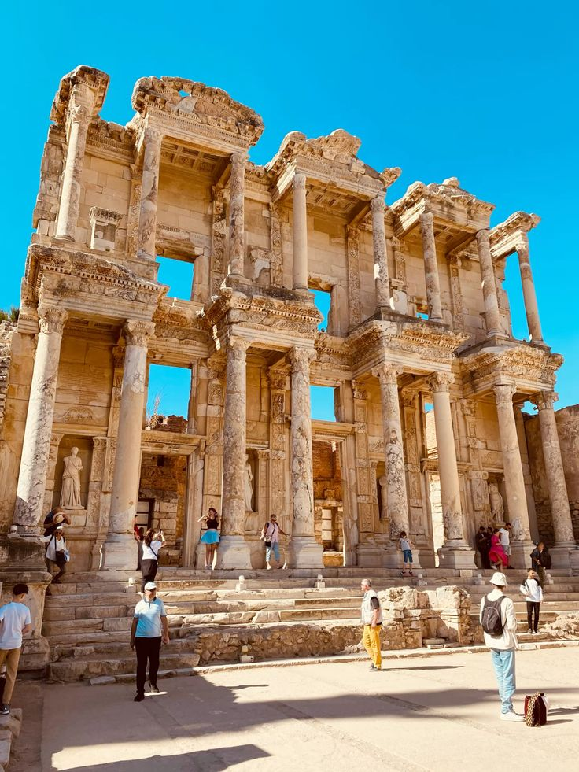
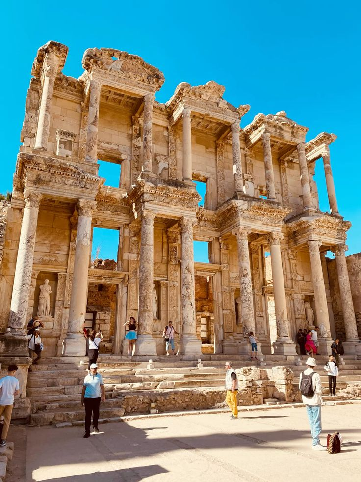

Batısında Ege Denizi ile çevrili olan bu bölge,
güzel kıyı şehirleri, zeytinlikleri ve tarihi antik kentleriyle tanınır.
İzmir, bölgenin en büyük ve en önemli şehridir. Sıcak iklimi,
denizi ve doğal güzellikleriyle hem yerli hem yabancı turistlerin ilgisini çeker.
📍 İzmir
İzmir Ege'nin incisi olarak bilinir.
Ege Bölgesi’nin en büyük ve modern şehirlerinden biri olan İzmir,
hem tarihi hem de çağdaş yaşam tarzıyla dikkat çeker.
Tarihi Kemeraltı Çarşısı, Saat Kulesi ve Alsancak gibi semtleriyle kültürel zenginlik sunar.
Aynı zamanda fuarları, festivalleri ve sahil boyunca uzanan yaşam alanlarıyla canlı ve enerjik bir şehirdir.
📍 Muğla
Türkiye’nin en popüler turistik şehirlerinden biri olan Muğla,
Bodrum, Marmaris, Fethiye ve Datça gibi ilçeleriyle ünlüdür.
Eşsiz koyları, antik kentleri ve doğal güzellikleriyle yaz aylarında milyonlarca turisti
ağırlar. Mavi yolculuk ve deniz turizmi Muğla’nın en önemli simgelerindendir..
📍 Aydın
Zeytinlikleri, incir bahçeleri ve antik kentleriyle öne çıkan Aydın,
hem tarım hem de tarih açısından önemli bir Ege şehridir.
Efes Antik Kenti ve Milet gibi tarihi yapılar Aydın’da yer alır.
Aynı zamanda Nazilli ve Kuşadası gibi ilçeleriyle hem ekonomik hem de turistik açıdan gelişmiştir..
 
